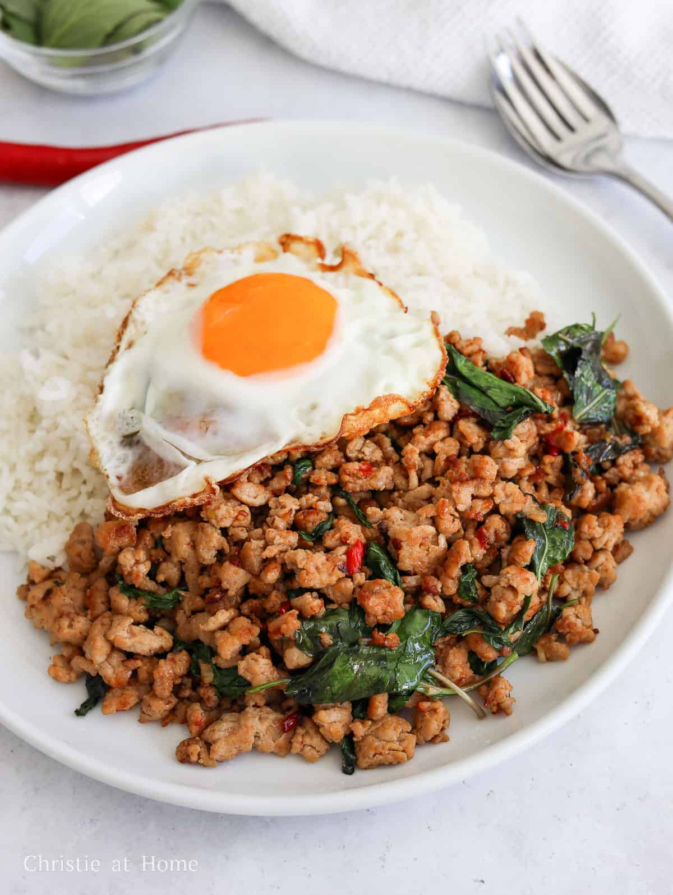

How to make Pad Kaprao

Do you want a spicy, savoury, sweet, dish thats packed full of protein and is has a taste that'll make you
think of Thailand? Well Pad Kapro, a stir fried staple dish for Thai people is a easy and quick to make that'll
enhance your tastebuds and your cooking skills to the next level!
Ingredients
- 250 grams of mince pork
- 2 pieces of garlic
- 1/2 onion
- 3 chillies (choose amount to your liking)
- a small handful of Thai basil
- 1 tsb oyster sauce, soy sauce, dark soy sauce, fish sauce
- 2 tsb cooking oil
Instructions
- Heat up your pan in medium-high heat and pour your oil in
- Finely chop your onions and place them in your hot pan and stir
- After your onions are almost brown, add your garlic and chili and stir for another 2 minutes
- Add in your mince pork and break them up in smaller pieces and stir until they're nearly done
- Pour in your sauces and chili and mix well with the pork
- Once fully cooked, turn off your stove and add in your Thai basil and stir well